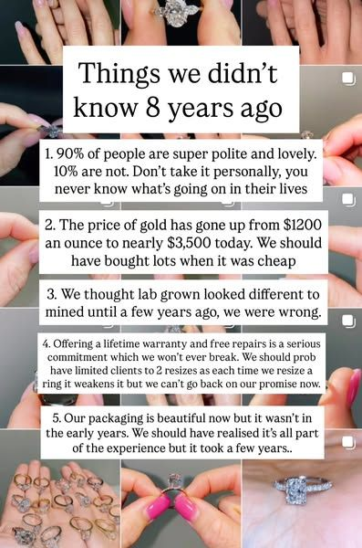

06 · What is working in your market
Real hands, real rings, a clear reason to book.
These ads are from the competitors above. These are the patterns we would build your campaign on, using your workshop and your rings.




1
Show the making
A couple at the bench, a band shaped to fit, a fingerprint pressed into gold. Things a chain cannot do.
2
Answer real questions
"Will my wedding ring sit flush?" "How much does bespoke cost?" Useful beats salesy in this category.
3
Give a reason to book now
Workshop dates, consultation slots, a wedding date. A dated offer gets people to act.

Daily posts, almost no one seeing them.
Between late May and early July you posted almost every day, which takes real effort. Every post earned between 0 and 2 likes. The reason is the format, not the effort:
What works in this category. London Diamonds has 224.8K Instagram followers and has kept one video ad running since July 2024. Their tone is calm and useful ("No pressure. No sales patter.") and almost everything is video of real rings on real hands.
Source: instagram.com/ringsbydesign public profile and post data, checked 1 October 2026.